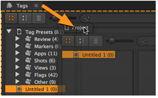
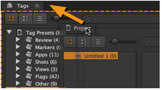

Hiero 的接口由任意数量的面板组成。面板就像具有不同选项卡的容器; 您可以将面板配置为包含特定工具，如时间轴或查看器，具体取决于您 presently 执行的任务。默认面板配置保存为工作区 (在 Nuke 中称为布局)，包括: 符合、编辑、审阅、翻转和时间线。您可以轻松创建适合您需求的自定义工作区，然后将其保存为自定义工作区，以便于回忆。
在定制过程中，您可以:
• 独立调整整个工作区或窗格的大小。
• 拆分窗格以创建新的工作区，例如两个观众并排。
• 根据需要添加和删除窗格和选项卡。
• 浮动和嵌套选项卡，将类似的功能组合在一起，例如在同一窗格中显示柱状图、矢量图和波形。
• 通过按鼠标光标最大化窗格 ` (后面打勾)。新闻 ` 再次返回到常规接口。
您可以根据需要创建任意数量的工作空间，如果需要，每个项目都可以创建一个。但实际上，您可能会发现两个或三个自定义工作区就足够了。
提示: 您可以通过导航到返回到工作区的已保存版本 窗口 > 工作空间 > 重置工作空间 .
调整界面、窗格和选项卡的大小与其他软件应用程序的工作方式大致相同:
• 要调整整个界面的大小，请将应用程序右下角的调整大小手柄拖动到所需的宽度和高度。
•
要调整单个窗格的大小，请将鼠标悬停在所需区域的边缘上，直到光标变为调整大小图标。
 单击并拖动光标以调整窗格或选项卡的大小。
单击并拖动光标以调整窗格或选项卡的大小。
分割窗格允许您将工作空间组织成由定义良好的边界划定的不同区域。
• 要拆分窗格，请右键单击所需窗格并选择 分裂 垂直 或 分裂 水平 .

添加和删除选项卡使您可以根据当前项目自由地个性化工作空间。
• 通过以下方式添加新选项卡:
• 导航到 窗口 并选择所需的选项卡。标签嵌入到其默认位置或作为浮动窗口添加到界面中,

OR
• 右键单击要在其中显示选项卡的窗格，并从 窗户 下拉列表。

• 关闭所有不需要的选项卡:
• 单击 x 在标签的右侧,

OR
• 右键单击选项卡名称并选择 关闭窗格 或 关闭选项卡 .

您可以将现有窗格和选项卡移动到界面中的新位置 (以帮助您组织项目)。
• 浮动窗格或选项卡:
• 右键单击选项卡名称并选择 浮动窗格 或 浮动选项卡 .

OR
• 从当前位置拖动所需的选项卡。

• 嵌套任何浮动窗格或选项卡，将其拖动到任何现有窗格。

提示:
使用橙色高光
 在 “目标” 窗格周围，帮助您确定选项卡的嵌套位置。
在 “目标” 窗格周围，帮助您确定选项卡的嵌套位置。